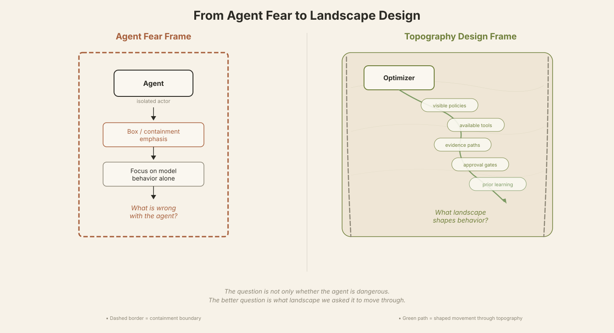
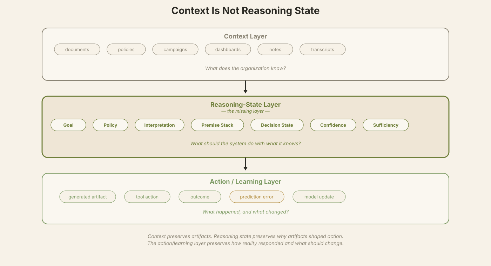
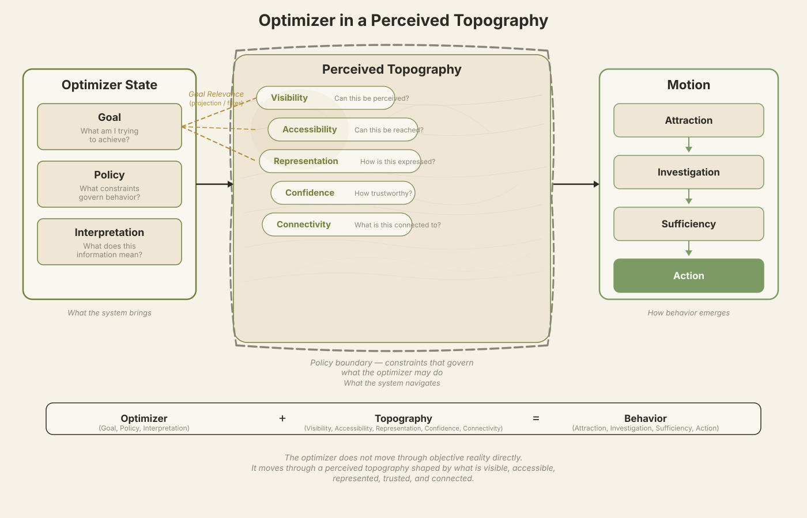
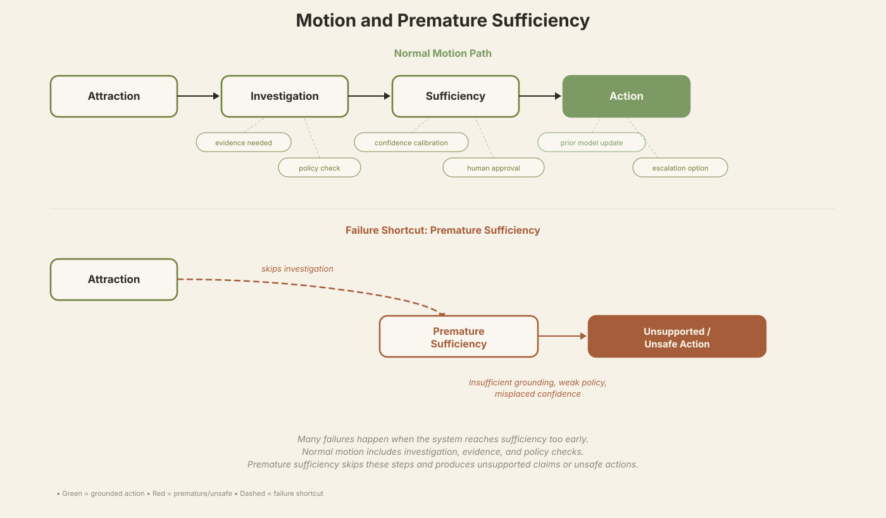
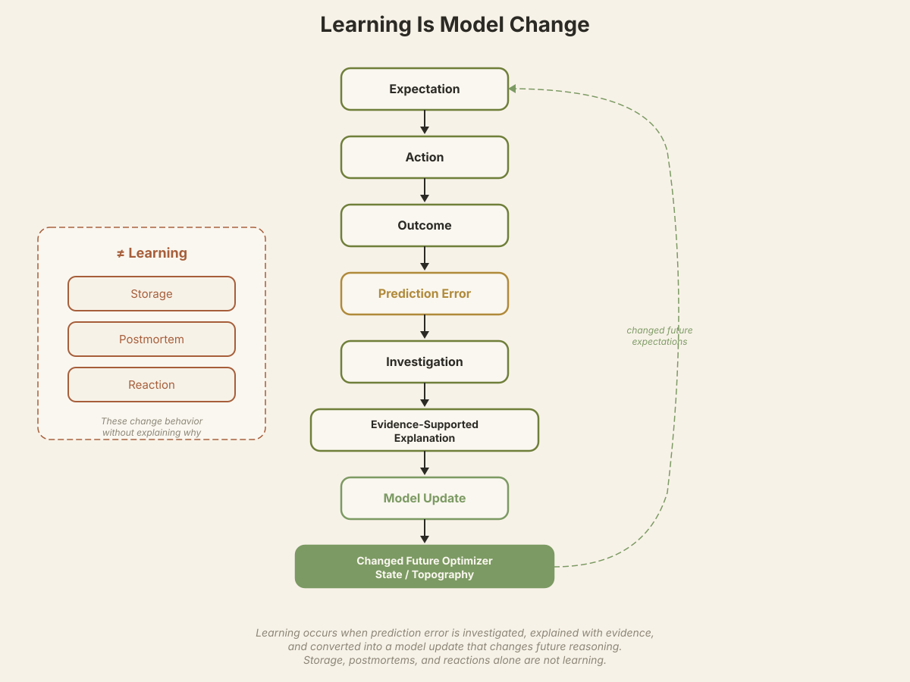
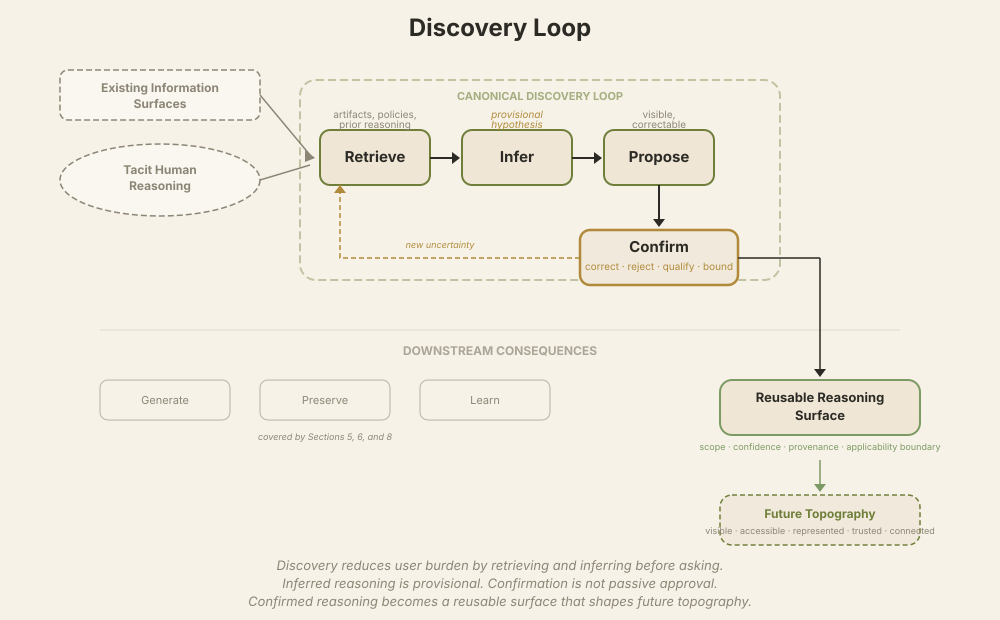
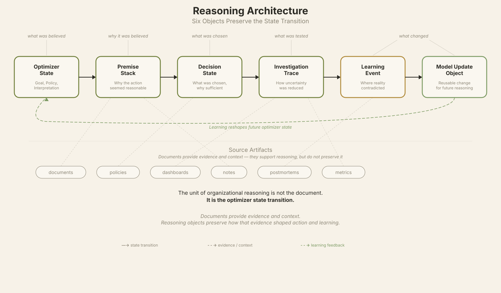
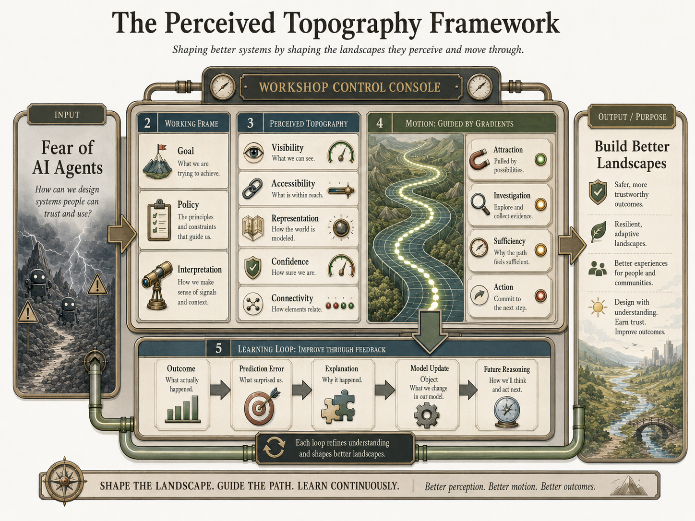

Warm palette derived from Figure 8 hero graphic. Preview only — originals unchanged.
Fig 1 From Agent Fear to Landscape Design
Source: paper_assets/svg/fig1_fear_to_landscape.svg
Preview: fig1_harmonized_preview.svg
Level 1 Palette swap only

Fear frame (warm terra) vs. landscape frame (olive). Teaching figure — simpler instructional plate.
Fig 2 Context Is Not Reasoning State
Source: paper_assets/svg/fig2_context_vs_reasoning_state.svg
Preview: fig2_harmonized_preview.svg
Level 1 Palette swap only

Context layer vs. reasoning-state layer. Three-column comparison.
Fig 3 Optimizer in a Perceived Topography
Source: paper_assets/svg/fig3_optimizer_in_topography.svg
Preview: fig3_harmonized_preview.svg
Level 1 Palette swap only

Optimizer state + five topography dimensions. Most complex teaching figure.
Fig 4 Motion and Premature Sufficiency
Source: paper_assets/svg/fig4_motion_and_premature_sufficiency.svg
Preview: fig4_harmonized_preview.svg
Level 1 Palette swap only

Normal motion path vs. failure shortcut. Warning accent (terra) for premature sufficiency.
Fig 5 Learning Is Model Change
Source: paper_assets/svg/fig5_learning_is_model_change.svg
Preview: fig5_harmonized_preview.svg
Level 1 Palette swap only

Learning loop with prediction error. Brass accent for prediction error moment.
Fig 6 Runtime Discovery Loop
Source: paper_assets/svg/fig7_discovery_loop.svg
Preview: fig6_harmonized_preview.svg
Level 1 Palette swap only

Retrieve → Infer → Propose → Confirm. Downstream consequences muted. Re-entry arrow.
Fig 7 Reasoning Architecture: Six Objects
Source: paper_assets/svg/fig6_reasoning_architecture_six_objects.svg
Preview: fig7_harmonized_preview.svg
Level 1 Palette swap + title fix (Figure 6 → Figure 7)

Six-object state-transition chain. Title corrected from "Figure 6" to "Figure 7" in preview.
Fig 8 — HERO The Perceived Topography Framework
Source: paper_assets/png/fig8_perceived_topography_workshop_console.png
Reference: fig8_hero_reference.png
Capstone Visual anchor — unchanged

Workshop control console. Capstone synthesis figure. All other figures harmonized toward this palette.